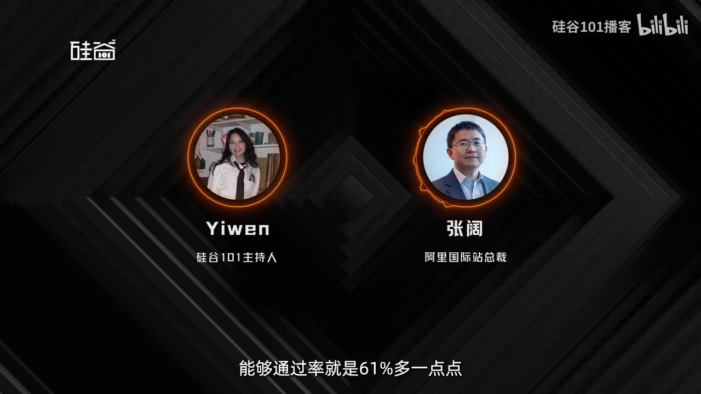

01 从编程到电商：产品与供应链
00:00–00:27 为节目预告摘录；00:27 起为开场，01:45 起进入正式对谈。下文保留原视频顺序。
00:00张阔 · 嘉宾必须是一个用得起的 AI，才是一个有价值的 AI。我们说 Agent 有一个公式：Agent 等于 Model 乘以 Harness 乘以 Context。你用这个 Agent 的产品经营，当然给定一定的边界，就是你的预算、你的供应链是一样的情况下，这个 Agent 一定比一个人去做日常的这些操作和判断能赚到更多的钱，那就是这个商业领域里面的 AGI。
00:27Yiwen · 主持人大家好，欢迎回到硅谷101，我是 Yiwen。之前我们聊到了大模型的训练数据和榜单，提到每次新模型发布，各种榜单上的成绩都在刷新。但这种进步对于我们用户来说，很多时候并没有变成工作中的进步。以电商为例，从一个产品创意到把它做出来卖到全世界。
00:49Yiwen · 主持人中间要研究市场，找工厂，比较报价，安排物流，还要在不同平台上开店、发布商品，最后算清楚这笔生意到底赚不赚钱。这些工作 AI 现在能接手多少，又会在哪一步卡住呢？半年前我们请到了阿里国际站总裁张阔，聊了他们刚发布的 Accio Work。半年过去，Accio 产品不断更新，所以我们再次请到他来聊聊这些变化究竟给商家的实际经营带来了多少帮助。
01:21Yiwen · 主持人张阔分享了一个观察：很多模型的通用评测成绩已经接近满分，但在真实经营中，他们并没有感受到同样幅度的提升。于是团队从实际业务中整理了 107 个任务，测试 AI 在没有人干预的情况下，能不能把工作做完。下面就是我和张阔的对话。
01:45Yiwen · 主持人阔，你好。三月份的时候你上过我们一次节目，那时是春节之后，你们刚发布 Accio Work。当时你就说 Claude Cowork 这个产品比特别火的 OpenClaw 更值得关注。现在过去了半年左右的时间，其实我们也看到市场相当于是印证了你的这样一个判断。那我觉得我们可以先聊一下 Cowork 的整体市场——你觉得你现在对于 Cowork 同事这样一个市场的整个判断是什么？
02:15张阔 · 嘉宾因为 Agent 最开始出来解决的第一个问题是 coding。我们现在认为 coding 的市场渗透率我估计 99% 吧，因为很难看到身边有一个研发人员不用任何 AI 去写代码；然后现在绝大多数代码应该都是 AI 产生的。如果跟这个相比，第二个垂直的赛道的渗透率可能都远远小于这个数字。因为 work 本身偏 work 类的产品，它可能完成的内容和能够交付的内容相对来讲还是比较有限，还是一些文案类的工作、一些计算类的工作可能完成得更多。
02:49张阔 · 嘉宾但对于商业，尤其像电商这种需要更复杂的判断、更长程的任务，以及最终这个结果不是一个当下马上可以验证的结果——对于这类的场景来讲，我们觉得整个 Agent 也才刚刚开始。
03:05Yiwen · 主持人OK，所以就是我们现在还是相当于把工程类的 coding Agent 和非工程类的一些商务类的应用分成两块来看的。你觉得为什么 coding 的任务交给 Agent 可能更加容易一点呢？相比你刚才说的比较少用的这些 work 的场景。
03:21张阔 · 嘉宾我觉得一是本身关于 coding 的工作，它百分之百数字化。所有的 code 在 Hub 或者在所有的 code base 里边，容易被 AI 更广泛地学习。第二个呢，去做这个内容是非常可验证的——它是一个天然可以验证的工作：这个代码到底能编译完成还是不能完成，出来的结果到底对还是不对。
03:42张阔 · 嘉宾所以这些事情天生比较适合现代大语言模型去进行。但如果我们把它换到商业，这个场景就太复杂了。第一，数据可能更加多元；第二个呢，它本身其实没有一个通用的流程可言——你可能最终有一个结果，而且不同的企业对于这个经营的结果好与坏的判断也有自己的差异性。
04:03张阔 · 嘉宾然后你要去做结果的验证，可能这个验证不是一个以单次去计的，它可能是一个天、一周、一月或者一年去计的一个结果，它整个反馈的闭环周期就是很长的。
04:15Yiwen · 主持人了解。自从 Claude 在上半年正式推出 Cowork 之后，这些通用的 Cowork Agent 有没有尝试解决你刚才说的那些问题？这中间有没有什么变化，是你觉得值得探讨的？
04:31张阔 · 嘉宾第一个就是这个赛道肯定更热闹了。你进到中国任何一个电梯间里，现在可能看到的最多的产品就是各类通用办公类 AI 应用。从产品体验角度来讲，各家都会有一些自己的特色。Accio Work 推出时，我们核心还是要解决电商这个垂直人群的问题。跟之前相比，它能解决的问题已经更泛化了。
04:53张阔 · 嘉宾如果说一年前我们的产品，核心解决的是 AI 搜索问题，它就相当于 Alibaba.com 的 AI mode。买家可以用更自然的语言描述自己的需求，或者通过多模态方式表达需求。我们现在看到整体搜索量涨了 20%，多模态搜索量涨了 130%。越来越多用户描述需求的方式，与之前有了很大差别。
05:17张阔 · 嘉宾第二个阶段是工作流本身向前、向后延展得更多了。比如之前搜索更多只是一个 query，现在向前延展的是要做市场调研、做产品设计包（design pack）的设计；有了这个设计之后，再把它交给供应商，并推进与供应商的整个沟通流程。
05:37张阔 · 嘉宾包括最后完成交易，我们称之为 Agentic Trade，也就是 AI 驱动交易。这些是我们看到一个 Agent 在上面所表达的一个更完整的路径。而且它能解决的问题，跟之前相比也有非常大的差别。到新阶段——今年 4 月我们推出 Accio Work，希望它能解决的问题进一步泛化。
05:56张阔 · 嘉宾跟电商相关的问题，我们刚才讲的可能都集中在供应链环节。因为 Accio Work 本身就基于阿里国际站（Alibaba.com）和 1688，而这两个平台本身就是全球最大的供应链平台。很大一类用户就是电商卖家：他们在 1688 进货，然后在淘宝、天猫、京东、抖音等平台销售；或者在阿里国际站进货，面向全球销售。
06:15张阔 · 嘉宾也就是说，在全球各个电商平台上——无论是 Amazon、Shopify、eBay 等——进行销售的商家，现在 Accio Work 都可以帮他们统一管理所有电商后台。通过一站式服务，理解其多平台经营状况，管理整个供应链，也管理企业员工在日常经营中的表现。这是我们目前看到这个 Agent 进一步泛化后所能解决的更多问题。
06:38Yiwen · 主持人嗯，可不可以具体举一个例子？比如说一个跨境商家，他一开始使用 Accio Work 是想要解决什么样的问题？整个流程是什么样的？
06:47张阔 · 嘉宾好的。这次我们在 CoCreate 大会上正好分享了一个商家 Edward 的案例。他原本喜欢种植物，但经常把花养死，于是想创造一个产品，让植物‘告诉’用户它当前的状态。但从这个想法出发，到真正做出一个消费级个人电子消费品，中间要走很长一段路。怎么把这个产品做成一个完整的设计包（design pack），这就可能难住很多创业者。
07:12张阔 · 嘉宾最后，这个电子产品到底该用什么样的检测设备、读取设备，怎么把成本压到最低，让销售时有利润空间？Accio Work 首先帮你完成 design pack 设计；其次，帮助你找到广州、深圳等地擅长电子产品的厂商，协助制造出产品。
07:31张阔 · 嘉宾它还能帮你解决跨境领域的问题：比如订船期、过海关需要什么 HS Code，货物运抵当地后如何管理物流。有了产品之后，还要生成各类社交内容，在 Amazon、eBay、Shopify、TikTok 等平台销售。
07:50张阔 · 嘉宾在这个过程中，你需要管理多个电商平台店铺，管理所有社交媒体内容；不同平台的内容需符合各自的规则，定价策略也可能各不相同，还要管理各平台买家给你的反馈（feedback），并持续迭代产品。现在 Accio Work 就可以帮你把整个完整周期，在一个 Agent 内完成，跨端管理你的整盘生意。
08:14Yiwen · 主持人所以我理解，在这个过程中，比如你刚刚提到的‘搜前’和‘搜后’这些步骤，Agent 可能主要起到搜索和推荐的作用。那中间有哪些步骤还是需要人来完成的呢？比如商家应该仍需做选择，判断哪个方案更好。
08:31Yiwen · 主持人也就是说，这些是人和 Agent 协作完成的步骤。
08:34张阔 · 嘉宾我可以描述一下最开始如果没有 Agent 的人是怎么做的：你从输入一个关键词开始，要把这个产品做出来。首先，你需要知道这个产品需要具备什么样资质的工厂和商家才能生产。然后你可能要管理一个 Excel 表格，这个表格可能有 20 列。
08:53张阔 · 嘉宾比如在十几个供应商之间，你要评估他们的生产制造能力、当地是否具备制造这类产品的资质、工厂的整体水平、拿货价格、能提供的账期、物流方案等等。最终你可能筛选出两到三家准备合作的厂家。而在这个过程中，往往还需要反复与供应商沟通，整个周期通常以月为单位，直到你拿到样品。
09:16张阔 · 嘉宾如果有 Agent，我们可以把这个周期缩短到以天为单位。它能帮你把最初的创意，首先分解成一个可制造的产品，并明确这个产品究竟需要哪些能力；然后基于 Alibaba.com（阿里国际站）平台上的商家信息——包括商家详情页内容，以及他们自主上传的企业知识库内容——为你匹配最合适的供应商；在你授权的前提下，Agent 还会主动与多个商家沟通、推进，并最终为你生成所需的报表。
09:47张阔 · 嘉宾原来花一个月维护的那个 Excel 表格，现在这个项目可能在 24 小时之内就能通过 AI 达成结果。
09:55Yiwen · 主持人比如说在刚刚我们举的这个例子里面，这个产品比较复杂，所以它其实也赋能了一批商家，帮助他们去发现一些原本不太熟悉的新品类，这里面就产生了更多可能性。
10:07张阔 · 嘉宾对的，我们的供应商反馈说，没见过这么专业的 design pack。因为一般买家都是在纸上简单画一画就开始交流，要把这件事真正搞清楚，本身就要花很多精力。还有很多时候，拿到的东西跟最初设想的又不太一样，这就导致大量 dispute 和反复沟通的过程——本质上，是把一个人的想法真正说清楚的过程。
10:28张阔 · 嘉宾到最后，我们会为你算出一个到手价，以及你在零售端的 margin 是多少，把这些关键信息更完整地呈现给用户。我觉得这也能极大提升他们自己做生意的成功效率。
10:39Yiwen · 主持人嗯，OK。那我们刚才以 Accio Work 为例，简单看了一个电商垂直领域的 Agent 是如何使用的。
02 SaaS、全球化与三项能力
10:47Yiwen · 主持人我想回到你一开始提到的通用 Cowork Agent 这个点。你讲到国内有很多厂商在竞争这个赛道，我们最近提到比较多的就是像 WorkBuddy 这类产品；在美国也有很多通用型 Agent，比如 Meta 刚刚发布的 Muse，之前 Grok Bot 也被大家评价为一个非常好用的产品。能不能给我们讲一下这个市场的竞争格局？你觉得目前整体的态势是怎样的？而且你现在也在美国，你觉得中美之间有没有什么比较大的差异？
11:17张阔 · 嘉宾从办公场景的角度来讲，我觉得中美之间的差异相对小一些。当然也存在一些不同的具体场景，这跟两地企业自身的发展延续性有关。比如在美国，SaaS 本身就是一个很大的生意，而且这个 SaaS 生态本来就是高度垂直化的——做 CRM 的有专门的 SaaS，做广告类、律师类、医疗类的，都有各自成熟且垂直的 SaaS 体系。
11:41张阔 · 嘉宾但这个生态在中国就不太一样：中国更多是平台侧主导，平台上已经整合了大量垂直功能。所以当 AI 进来的时候，本身也会带有一定的惯性差异。不过从最终要向用户交付结果这个目标来看，各个平台想做的事情其实是一致的。
11:57Yiwen · 主持人对，这个市场观察也很有意思。上次我们聊的时候，正是美国 SaaS 恐慌情绪最严重的一段时间，有很多 sell-off，也就是抛售。大家担心 AI 的能力，特别是 Claude 推出 Cowork 之后，会再一次“杀死”很多 SaaS 公司。当时你的判断是，只要 SaaS 公司把 AI 用好，AI 反而可能是利好。现在看，很多 SaaS 公司也没有像当初想象的那样无法继续生存。
12:32Yiwen · 主持人能不能再聊一下，比如这几个月过去，你觉得 Agent 对这些 SaaS 公司的实际影响如何？你观察到他们采取了什么样的应对策略？
12:41张阔 · 嘉宾如果这个 SaaS 本身做的内容比较简单，那其中一些任务就可能由 AI 自动完成。这在一定程度上确实会削弱 SaaS 本身原有的能力，这种情况是存在的。另外，SaaS 本身与企业工作流集成得非常紧密，因此它对整个企业的上下文理解也更深——尤其是对企业自身的‘本体’（ontology）的理解。就算请一个大学生来，他也很难搞清楚这家企业里各项数据究竟代表什么含义，以及这家企业最终的经营目标是什么。
13:11张阔 · 嘉宾所以单靠一个人去完成这件事本身就非常困难。一方面，SaaS 厂商自身也可以围绕这个方向升级产品，用更多 AI 能力来推动；另一方面，当一个 AI 进入企业时，它也必须深入理解这家企业各类数据的真实含义——比如老板到底想基于哪些指标去做优化。
13:29张阔 · 嘉宾最终达成一笔交易，并不意味着只要成交了，就代表结果好或坏。这笔交易究竟是为了提升毛利率（margin），还是为了抢占更多市场份额？预算的使用方式、库存管理策略、广告投放方法，都会因此完全不同。而这些事情，是无法靠把一个通用 AI 直接扔进企业里就能自动解决的。
13:50张阔 · 嘉宾同样地，原来的 SaaS 系统虽然需要人来推动和执行，但它的一大优势在于，它已经沉淀了大量关于企业经营的上下文知识。如果能用更先进的 AI 来辅助它，就有可能获得更好的业务结果。我认为当前阶段，更多是 SaaS 和 AI 双向集成、互相增强的过程。
14:05Yiwen · 主持人其实在美国，像你刚刚提到的垂直领域——法律、医疗等，Harvey、OpenEvidence 这样的产品，目前做得都非常好。但我理解，这些更多是原生 AI 构建的 Agent 产品，而不是传统公司简单叠加 AI 来改造原有工作流。
14:22张阔 · 嘉宾嗯，每个时代都会诞生属于这个时代的公司。那些既对技术理解更深、又对行业经营逻辑把握更准的人，往往能跑得更快。就像移动互联网时代有移动互联网时代的产品一样，每一次技术转折点，都会催生一批新公司。
14:38Yiwen · 主持人那你觉得在中国市场，你刚才提到从平台角度去推动、响应用户需求，我们该如何真正理解这些产品的用户需求呢？
14:49张阔 · 嘉宾比如美国和中国的电商生态就有很大差别。如果是一家中国企业在中国本地经营，它的第一反应一定不是建独立站；但在美国，Shopify 或者独立站这种模式，仍然是个很大的生意，而且还在持续增长。比如在美国，Amazon确实是个典型的平台型模式——你甚至接触不到自己的终端客户，只需要把商品发到它的仓库，再通过它的体系卖出去，这很契合当地企业当前的经营状况。
15:17张阔 · 嘉宾但如果你希望打造自有独立品牌、拥有直接客户关系、能与所有客户建立长期连接，那么 Shopify 就是一个合理选择。而在中国，淘宝和天猫则处于两者之间的状态：它既是一个流量平台，让你能以更低的成本获客；同时平台内也集成了大量电商运营工具。
15:35张阔 · 嘉宾其实最终交付给客户的价值项是一致的，只是在不同市场，这些价值的呈现形态不一样。
15:42张阔 · 嘉宾仅此而已。
15:43Yiwen · 主持人基于这个区别，你们有没有发布国内和海外不同的版本？
15:48张阔 · 嘉宾AI 这类产品很有意思，它从第一天起就是全球化的，天生没有语言问题。你在不同地方要解决的用户交互问题大同小异。从客户交互的角度看，它的使用门槛也比之前大幅降低了。
16:05张阔 · 嘉宾虽然它里面有一部分 GUI 属性，但大多数用户的交互方式是 LUI（Language User Interface），也就是语言用户界面——我把工作任务描述清楚，就可以把这个任务交付给你。但它需要做的关键差别是什么呢？我们常说 Agent 的公式是：。
16:24张阔 · 嘉宾不知道业界是否统一这么表述，但这是我个人总结出来的模型。为什么是乘法？因为其中任何一项为零，整个公式的输出结果就是零——你既要在 Model 上做优化，也要在 Harness 上做优化，同时还要在 Context 上做优化。
16:37张阔 · 嘉宾美国跟中国肯定在 harness 和 context 上会有差别。因为你需要对接的美国工具、美国平台，跟中国的工具、中国的平台是有差别的。而 context 则跟你自身的日常经营上下文有关，也跟你和平台集成的情况有关。比如在 Alibaba.com 或 1688 里，你跟供应商之间的交流也是你的 context 的一部分，对话本身是 context 的一部分，你的商业数据也是 context 的一部分。
17:02张阔 · 嘉宾平台长期积累的这些数据，以及我们观察到的垂直行业属性、趋势等，也可能构成 context 的一部分。我们需要把所有这些数据，基于不同区域、不同用户需求进行系统性整理，才能更好地实现 agent 所期望的效果和水平。所以我们最早开始做的是海外用户，现在使用更多的可能是中国用户。
17:26张阔 · 嘉宾从供给侧、企业版本来看，中国企业数量众多；但从个人用户、买家或电商经营者的视角来看，国外用户可能使用得最多。这跟以前有挺大差别——以前国内有 1688 跨境、有 Alibaba.com，我们做了二十几年，这是两个独立平台。但 Accio Work 从第一天起，就可以作为一个全球化的平台型产品来设计和交付。
17:46Yiwen · 主持人这个非常有意思，可能是 AI agent 时代一个新的产品设计范式。你说‘第一天就可以做一个全球化的平台产品’，你觉得这可以适用于所有的 agent 产品吗？
17:56张阔 · 嘉宾如果需求本身是接近的，那这个事情应该是成立的。因为电商本身我们认为它的最大公约数是比较接近的。但如果需求本身在各地就有非常大的差异，流程差异很大，环境差异很大，那可能还是有很多部分需要在每个区域重新做适配和重构。
18:13Yiwen · 主持人你们推出这个产品也有一段时间了，在你刚才提到的这三个方面——model、harness 和 context——哪个部分是你们持续投入时间或精力更多的？还是这三个部分你觉得都同样重要？
18:29张阔 · 嘉宾此时此刻我觉得可能是齐头并进的。最开始大家可能在 harness 上花的精力比较多，因为你要连接不同的 tools，要管理自己的 memory，要做好用户的授权等等，这一整套工程体系，是保证系统能够持续稳定运行的基础。而做电商天生就是一个长程任务，它需要连续几个月不间断地执行和经营，并持续优化以获得结果。
18:56张阔 · 嘉宾所以在 harness 上本身就要花非常多精力。然后我们在 context 上天生就有优势，因为我们已经积累了二十多年，至少在电商、跨境电商、采购等领域持续深耕。这里面有大量的、与日常沟通相关的信息，也有大量行业属性、平台趋势属性，这些信息都可以融入 context，从而让你得到更好的结果。
19:18张阔 · 嘉宾所以现在我们在 model 上其实也花非常多的时间。因为我们发现 model 和 harness 是需要协同优化的，而不是只优化其中一个，另一个就直接用一个通用的 frontier 模型就能完成。而且现在大家对 model 的理解肯定都更深入了。
19:35张阔 · 嘉宾并不是说用一个通用 model 简单做做 SFT 就行了，可能都需要基于一定尺寸的模型去做 post-training。同时，在 model、serving 和 harness 这三个层面，都要做非常精细的打磨：既要让模型在每一层都发挥出最好效果，也要让产出结果的效率最高，用最低成本达成同等结果；还要提升缓存命中率，以及整个模型产出结果的准确率，达到一个新的水准。
20:03张阔 · 嘉宾它肯定是在训练、serving 和 harness 上要同步优化的，而不是只简单优化其中一件事。也就是说，至少在这个角度来讲，现在的竞争已经是一个多元化的、全方位的竞争。这也是能让不同垂直领域的 agent 真正跑出来的原因——因为它不是一个通用模型，再加上一些简单 prompt 就能产出结果。
03 真实任务评测与成本
20:24Yiwen · 主持人对，其实这也是一个很好的过渡。因为你说到模型和 context 这两个点，我觉得可能就对应了通用模型和垂直领域模型这两个不太一样的发展方向。因为我们上次聊的时候，也有问到：当现在底层模型能力越来越强的时候，我们为什么还能在垂直 Agent 身上看到机会？你们当时提到，你们做这个产品有二十多年的优势，包括信息积累和数据的准确性，可以形成一个比较有效的强化学习机制。
20:53Yiwen · 主持人我想现在再把这个问题抛给你：近半年来模型也有那么大的进步，你觉得这些优势的作用是更明显了，还是它有什么变化呢？
21:03张阔 · 嘉宾第一个，我们对这件事本身的理解也是持续迭代的。为了衡量一个 Agent 好不好，我们甚至自己做了一个 benchmark。因为现在模型发布的频次，比我们上次聊的时候更快了——我估计我在硅谷待一个礼拜，光个人助理类产品就发布了好几个。但我们在日常经营中发现，每当一个模型发布，都会宣称自己在各个维度上都更好。
21:29张阔 · 嘉宾甚至非常多的公开榜单已经打到 99 分了，满分 100，就只在小数点后继续进步。但我们自己在日常使用中，并没有感受到像宣传中说的那么好。所以我们后来基于持续实践发现：比如 coding、数学，或者通用的 agentic 能力得分较高，和你在电商领域里能否完成更多实际工作，其实相关性并不大。通用智能水平提升，确实能提高某些任务的完成通过率。
21:59张阔 · 嘉宾但从我们整体感受来讲，大家并没有把每个新发布模型的本质水位拉得那么高。因此，我们就基于上百万条阿里国际站（Alibaba.com）的真实经营数据，以及Accio Work里的真实问答数据，总结出了 107 个 task。这 107 个 task 现在是开源的，我们也希望所有模型在训练时，都能围绕这个开源 benchmark 做自己的评测。
22:20张阔 · 嘉宾这样，每次有新模型出来，我们也能借一点大家的光；否则，各家评测内容都不一样，导致我们每次接入一个新模型，都要做非常大的适配，才能让电商类 workflow 表现得更好。而这 107 个 task，再加上 Accio Work 作为一个统一的 harness，就可以用来评测各个模型在该 benchmark 下的表现。事实上，目前最前沿（frontier）的模型，在我们这个 benchmark 下的通过率也只有 61% 多一点点，连及格线都还有一点费劲。
22:49张阔 · 嘉宾但这不代表 61% 就意味着这个工具不能用。61% 指的是完全无人干预情况下的任务完成率。而每个工作的难度是不一样的，我们把它分为 L1 到 L4 四个等级——越长程的任务，最终结果往往越开放；这时候能通过的模型就越少。

23:06张阔 · 嘉宾我们把所有这些模型放在一起，形成一条新的帕累托（Pareto）最优曲线。我们希望为用户优化的是：用最低成本拿到最好结果。这不等于模型升级了，大家就都去跑最贵的模型、完成最简单的事。事实上，存在大量低成本模型，尤其是中国产的很多模型，具有非常高性价比；当然也有些 frontier 模型，用于解决复杂和困难的问题——由 Accio Work 这个产品本身来做路由，把不同问题分发到不同模型上。同时，依托我们自己的 harness 能力和 context 能力，即使使用同样模型，我们也能拿到更好的结果。
23:43张阔 · 嘉宾这是我们在实践中不断尝试的问题。比如我们用千问最新版本的小尺寸模型做后训练，它已能拿到非常接近 frontier 顶级模型的效果。那么大量这类简单工作，我们就可以路由到小尺寸模型，更快地获得结果，同时提升效率。因为现在商家侧我们的一个核心感受是：必须是一个‘用得起的 AI’，才是一个有价值的 AI——它是一个日常经营使用的工具，不是一个为解一道数学难题而一次性使用的工具，这两者有本质差异。
24:18张阔 · 嘉宾在同样的任务条件下，把 107 个任务都跑完，我们再换一个角度比较完整的 Agent 产品：Accio Work、Codex 和 Claude Code。在相近任务通过率下，Accio Work 的成本是另外两者的三分之一，而且还可以不断降低。让更多人能够更大规模地把工作交给 AI，正是我们想优化的目标。
24:40Yiwen · 主持人对，这个非常好。因为我们经常聊到开源模型和 Token 经济学，业内一个常见观点是：企业正在有选择地使用不同模型，比如像您刚才提到的，把不同任务分配给不同模型，最终实现降低成本的目的。我觉得你们现在的这个例子，也是这一策略的一个很好的例子。能不能具体讲一下你们做的 benchmark？您提到107个任务，能否描述一下这些任务的具体类型？
25:06Yiwen · 主持人这都是具体的电商任务，是吧？
25:08张阔 · 嘉宾是的，我举几个例子：有些任务跟电商直接相关，有些则跟平台操作相关，但全部都来自日常业务中真实高频发生的交互场景。比如，一个买家向多个商家发起询盘（quotation）后，需要从大量商家返回的报价单中，筛选出最合适的供应商。这类报价单本身包含大量信息——除了产品参数、生产工艺、制造能力、报价金额外，还需明确到手价（含税价）、物流解决方案等。此外，在测试中，我们还会在这些报价单里掺杂几封钓鱼邮件。
25:46张阔 · 嘉宾我们要让 agent 准确识别出哪些是恶意或有害的信息，哪些是真正有价值的信息；并最终清晰计算出从工厂端出厂价，到含税到手价的每一项明细，从而选出唯一正确的供应商。这就是一个完整的 task。
26:03张阔 · 嘉宾如果中间任何一个环节失败了——比如信息提取错误、逻辑判断偏差、或者最终计算结果不准确——那整个 task 就算未完成。再比如第二个 task：为客户预订一艘船。给定交货时间与起止港口，agent 需登录船公司官网完成订舱操作；若成功 booking，则视为 task 完成，否则即为失败。此外，平台上存在大量纠纷（dispute），比如买家对卖家或供应商提出的投诉，agent 需判断当前提供的信息是否完整，并最终给出‘赔’或‘不赔’的结论——这个结论是否正确，或者是否需要补充更多信息才能做出终审判断，都属于评估维度。
26:35张阔 · 嘉宾结论是否应该赔、是否正确，或者目前是否还需要更多信息才能判断，这些都要考察。这些都是日常工作中的问题：有的检查最终计算结果，有的检查执行是否成功，有的检查商业判断——当前究竟还是开放问题，还是已经可以作出结论的问题。类似这样的任务，我们有一百多个，涵盖七大类。
27:00张阔 · 嘉宾这107个是当前 snapshot 的数据，下个月再问，数量可能就更多了。因为我们持续将更复杂、更贴近真实业务的新问题加入 benchmark，确保模型测试始终与真实经营结果对齐。同时，为避免模型或 agent 在迭代过程中出现性能‘腐化’——比如过一段时间后，原本能通过的 case 又失败了，甚至结果更差——这是我们不能接受的。因此，我们在每次模型或 agent 版本迭代时，都会持续做评估，保证产品能够向前推进。
27:31张阔 · 嘉宾如果说广义的 AGI 怎么定义，不一定有定论。我觉得商业上的 AGI 比较好定义：在给定边界条件下，比如预算和供应链相同，用这个 Agent 产品经营，通过日常操作和判断，能够比人赚到更多的钱，那就是这个商业领域里面的 AGI。
27:53Yiwen · 主持人也就是说，整个电商全链路的商业环节，其实都被覆盖到了。您刚才提到的七大类，包括 sourcing、dispute 等，确实代表了差异显著的能力模块。那么在真实场景中，有没有哪些环节对商家来说特别困难，因而更依赖 agent 来完成？
28:14Yiwen · 主持人又有哪些环节，商家反而更倾向于自己操作？
04 经营场景、人类判断与模型路由
28:17张阔 · 嘉宾我觉得可能不会这么划分。我们会把一些必须由人来做决策的事情留给人，比如支付、采购这批货——这个确认按钮一定得交给人来判断，因为你要对整个经营结果负责。所有这些AI生成的条款和建议，最终要不要执行这笔采购，肯定是人来决定的事情。
28:40张阔 · 嘉宾从分工的角度来讲，我觉得按频次来划分可能更有意义。最近我们做了非常多的电商商家调研，因为Accio Work在国内也可以解决B2C商家日常经营的问题。我的工作前六年（2011到2016年）都在淘系，也就是淘宝和天猫，负责商家平台、开放平台以及相关工具等。那时候我对整个商家后台的经营逻辑是比较清晰的。
29:04张阔 · 嘉宾后来我们做Accio Work这个产品时，我就换了一个视角，去看商家到底如何用AI产品做日常经营。结果发现一件非常有意思的事：我们当时觉得这个产品已经做得比较极致了，比如让商家怎么看数据、怎么搭建客服体系、怎么做日常客服运营等。但今天有了更强大的AI能力之后，你会发现大家看问题的方式、经营的方式，其实出现了非常多新的视角和路径，做生意确实比以前更灵活了。
29:33张阔 · 嘉宾比如第一个典型场景是多平台经营。现在问国内商家，大部分都是在多个平台经营，比如抖音电商、淘系电商、京东、拼多多等。那么问题来了：今天到底哪个平台真正挣到钱了？你虽然有大量流水进来，但不代表最终经营是有利润的。这个问题本身就需要跨多个平台的数据，综合来看投入情况、收益情况、退换货情况，最后形成一份完整的经营报表。
29:59张阔 · 嘉宾以前一个人要完成这件事，得在多个平台之间来回切换、整理Excel表格，最后还不一定算得准确。而我觉得现在AI解决这个问题应该非常容易——你可以在任何时间节点，获得一份跨平台的实时经营结论。第二大类场景是商品发布：很多商家要同时经营多个平台，而每个平台的规则多少都有差异。
30:22张阔 · 嘉宾而且每个平台因受众和媒体形式不同，所发布的商品内容也需相应调整。对稍具规模的商家来说，这类差异累积起来就是一个非常大的工作量。比如发布一个新品，光是在各平台更新一遍，就是一件很大的事。这件事现在交给AI来做就非常方便。
30:39张阔 · 嘉宾比如你有一个新品要在多个平台同步发布；或者你对某一类商品要做统一更新，比如到了大促节点，需要批量打折、调价等操作。这类可重复性高的工作，AI可以全部做完，再给你一个判断建议——你可以选择先存入草稿箱，再人工审核发布；也可以直接授权AI自动发布，并向你反馈经营结果。它的效率和精确性，肯定比人工更高。再比如说，任何一个规模稍大的店铺，通常都有客户经营的要求。
31:07张阔 · 嘉宾当一个客户进来咨询问题，你怎么回答？以前大家可能开经营会，一条条拉出来看谁答得对、谁答得错，再结合转化数据做点评。而现在AI可以快速分析你所有的客服应答和经营结果，告诉你：什么样的回答方式效果更好。
31:26张阔 · 嘉宾对于To B业务来说，AI还能识别哪些客户当前可能出了问题——比如这笔交易本来进展顺利，但中间突然出现异常，订单可能要黄了。AI会给出提前预警，或提示你接下来最关键的决策点是什么。这类事情过去需要大量人力做复盘，对业务主管和一线业务员的要求都很高；而现在AI一定可以比原来做得更好。
31:50Yiwen · 主持人嗯，其实AI能力的增强，正如你刚才提到的，确实让商家的工作方式变得更灵活。那你觉得，商家的预期会不会也因此变得更高，或者更加复杂？
32:01张阔 · 嘉宾一定是这样的。每次你做一个产品，大家都会提出更高的要求。我可以从一个数据来说明：我们每天都会分析 Accio Work 中的任务分布——刚才提到有七大类任务，而每一类中又细分为 L1 到 L4 四个难度等级。从产品发布的第一天到今天，如果我们截取今天的任务分布图，会发现任务难度持续从简单向复杂演进：最初用户多是 L1 级任务，比如‘问一个问题，你能给我答案就挺好’；随后逐步过渡到‘交给你一个任务，请帮我完成’；再往后，就是‘交给你更复杂的任务，请帮我完成’。
32:39张阔 · 嘉宾最后发展到‘交给你一些与经营最终判断直接相关的任务，请帮我完成’。商家侧会每隔一段时间就会推动产品去解决更复杂的问题，把更多任务交给这个产品，让它能反复执行；让店铺中越来越多的经营数据交由 AI 辅助判断。但最终，最关键的判断仍必须由人来做。
33:00张阔 · 嘉宾我们核心强调的，还是越来越多重复性的工作交给 AI——这本身就是电商行业进步的重要体现。
33:06Yiwen · 主持人嗯，你刚提到最后一个下单的动作，肯定要交给人做判断。除此之外，还有什么是你认为比较重要的判断？
33:12张阔 · 嘉宾那太多了。假设现在 AI 已经能帮人完成大量重复性工作，而你有一个创业想法，最终要把它变成一个产品卖给更多人——第一步，这个想法本身是否靠谱，就是一个非常关键的判断：你所解决的问题是不是一个真实存在的问题？你所面向的客户群体，是否真的对你设计的这个产品感兴趣？
33:34张阔 · 嘉宾并且，这个客户群体的基数足够大，愿意支付足够多的溢价。这些事情都需要人判断，产品的 taste，也就是品位，也要由人把握。你此时对市场的预测和判断，是经营者的商业直觉。比如同样一笔预算，你是希望多投广告、少备库存，还是多备库存、铺设更多渠道，或者追求更大的利润空间？
33:56张阔 · 嘉宾这些都是你对当前整盘生意经营状况的判断。我认为，这些事情现在仍需要人来看。AI 可以辅助做大量市场分析、调研和竞争对手判断，但最终商业判断还是由人作出。
34:10Yiwen · 主持人嗯，我想再回到我们之前提到的 107 个电商任务。因为你刚才提到了成本降低的数据，我看到你们公布的估算成本：Accio Work 是 3.69 美元；Codex 和 Claude Code 都在 9 美元以上，也就是说 Accio Work 的成本约为另外两家的三分之一。这个成本具体包括哪些内容？
34:33Yiwen · 主持人能不能给我们讲一下？另外，你觉得在这个过程中，为什么 Accio Work 的成本会更低？
34:38张阔 · 嘉宾为什么更低？我觉得比较好理解：因为我们本身就是采用帕累托最优的模式，将所有任务智能路由到不同模型上。比如 L3 以下级别的任务相对简单，我们就用小尺寸模型或高性价比模型来完成，最大程度帮商家节省成本。
34:56张阔 · 嘉宾而有些任务对多模态能力要求较高，或者对视频处理能力有强需求，这时我们就可能需要路由到特定模型上，对应一定的成本。其核心优势在于集约化采购——相比个人单独调用模型，平台级采购成本天然更低。同时，在相同模型前提下，我们在 harness（执行系统）的工程实践、context（上下文）管理等方面，效率也显著高于通用模型。
35:18张阔 · 嘉宾这些方向都能帮助用户节约成本。为什么我很关心这件事？因为我经常看商家侧的反馈，他们说觉得贵。有时候，是针对某个特定任务觉得贵。
35:29张阔 · 嘉宾有时候，是商家固定选择某个模型，比如用最贵的模型解决所有问题，于是觉得贵。我们建议客户直接选 Auto 模式，帮助他按帕累托最优去选择各项工作应该用什么模型完成。相比之下，Codex 和 Claude Cowork 的 Agent 与自有模型绑定，有些类似路由的工作可能就没有办法做。这也能从美国市场看出来：有一大类生意很受欢迎，比如 OpenRouter、Fireworks。
36:02张阔 · 嘉宾它需要托管大量模型，帮你优化每一个模型，以解决特定的工作与任务。现在越来越多的模型正成为商品，每隔一段时间就会有更优的开源模型出现。至少在相当长的一段时间内，我们认为这仍是存在非常大优化空间的一件事。
36:18Yiwen · 主持人你们现在支持哪些底层模型？
36:20张阔 · 嘉宾基本上你能看得到的模型我们都支持。当然，也有一些帕累托最优曲线已经完全埋在底部的模型，那就没有必要支持了。
36:28Yiwen · 主持人因为我们聊的时候，GPT-6 Astra 这个模型刚发布，大家也在讨论它降低 Token 成本，同时能力更强。你觉得这样的模型发布——因为你们测试用的是 Codex 和 Claude Code——在 Astra 之后，会对你们造成什么影响吗？
36:47张阔 · 嘉宾我觉得你再过两天可以直接去我们 Bench 上去看评分。嗯，我们再测两次，去实际观察这个效果到底是好还是不好。因为之前经常会出现这类问题：一旦没有一个基准测试（benchmark），你就无法量化地判断它到底好还是不好。他发布一个模型，说‘这件事我解决得很好’，就推导出‘所有事情我都能解决得好’。
37:09张阔 · 嘉宾其实这两件事并不具备相关性。比如他可能在 3D 模型方面做得不错，也可能在某些计算机使用（computer use）场景上有突破，但这并不代表他在通用商业场景中的 Agent 能力强。所以你说它是 AGI——我现在可以明确告诉你，它肯定不是 AGI；最终衡量标准，还是以最高性价比完成任务为第一优先级。等我们发布了评测结果，你可以直接去网站上看。
37:34张阔 · 嘉宾因为所有前沿（frontier）模型，我们都有一个统一的 benchmark 去跑，这种评估方式可能更公允一些。
37:41Yiwen · 主持人对，所以这也体现出了 benchmark 的重要性。这其实也是现在的一个趋势：我们越来越需要专业领域的 benchmark。这就是为什么数据公司现在非常火——每家模型公司也都需要这些具体的数据去进行训练。其实又回到了我们刚才说的通用 Agent 和垂直领域 Agent 的区别。
38:00Yiwen · 主持人那你觉得反过来说，对于一个垂直产品，因为其实我们都有非常具体的流程，这个会不会因为流程过于固定、写得太死，反而限制了一些模型本来能够做到的事情？
38:13张阔 · 嘉宾我觉得我们不会去固定这些流程。我们现在核心的一个标准，还是先明确什么是‘红线’——即哪些事情是绝对不能做的。但实现路径肯定不是定死的：只要你能把目标说清楚，我们就一定会不断优化这个流程、不断优化这个操作，持续逼近你想要达成的目标。
38:32Yiwen · 主持人嗯，现在别的电商其实也有在发类似的 Agent 产品。对于一个商家来说，如果他在用多个 Agent 的时候出现了冲突——比如不同 Agent 给他的建议不一样——这种情况应该怎么样去处理呢？
38:47张阔 · 嘉宾比如在美国为例，像各个垂直的电商和一些平台电商也都有一些 Agent，而且这些 Agent 做得也挺好的。我觉得 Accio Work 跟他们的差异，更多在于 Accio Work 是希望站在商家自己的一本账的角度，帮他做整体经营优化：各个平台应该怎么投入、怎么经营。
39:06张阔 · 嘉宾从定位上来讲，这个产品跟其他围绕某一个平台去做优化的 Agent 还是有明显差别的。第二个是，不同 Agent 给你不同的建议，这非常正常。最核心的还是说，作为老板，你要有一个整体的经营目标——然后基于这个大的经营目标，去判断每个 Agent 给你的建议是否合理。
39:27张阔 · 嘉宾因为从我们自己的视角来看，商业经营是一个非常长周期的过程，甚至不是以单次交易成功或失败为目的。这次交易就算成功了，它也可能最终导致你整体商业失败；那它就不是一个好交易。同样一笔钱，花法也可能有非常大的差别。
39:45张阔 · 嘉宾各个平台有它自己的建议。而你从自己经营的最终目标出发——是以毛利为结果，还是以规模为结果，或是以速度为结果——你必须有自己的核心判断。这件事没有办法靠一个统一的 Agent 去调和所有 Agent 的意见，再给用户一个‘更好’的反馈；这不是我们这个产品设计的初衷。
40:01Yiwen · 主持人对，所以其实这还是回到人的决策。而且从你们厂商的角度来看，这也是你们不希望 Agent 去代替的。
40:08张阔 · 嘉宾最终的经营判断，一定是这个人对于产品本身的品位，这肯定跟这个人密切相关。这也是产品走向市场能否成功的关键。我觉得AI能够帮助他完成大量原本重复性的工作，从而把人解放出来。但最终对于商品的判断、对于一个问题究竟是大问题还是小问题的判断，以及对于商业节奏的判断，这些一定需要人来完成。
40:32Yiwen · 主持人嗯，很有意思。
05 云端长程任务与创业案例
40:33Yiwen · 主持人那最后我也想聊一下Agent最近在设计上的一些变化。因为你们也把Accio Work描述成是24小时在线的，相当于一个业务团队。我们其实也看到最近有很多Agent产品开始脱离用户的本地电脑，在云端运行。比如 Grok Bot 这样的产品，WorkBuddy也有云端模式。
40:54Yiwen · 主持人我其实蛮想聊一下云上业务的设计理念，也就是所谓‘持续在线、持续响应’。具体来说，它到底意味着什么呢？
41:02张阔 · 嘉宾我觉得这可能是两个概念。上云是个相对简单的事：Accio Work 的 PC 版出来后，可能过了几天就有云端了。从客户需求看，很多人希望把本地记忆放在云端，这样换一台机器也能继续操作。而“长程”是另一个概念——到底是多长？比如让 AI 解哥德巴赫猜想，推演两个月，也叫长程，就是一直不停地推演。
41:27张阔 · 嘉宾但从商业角度来讲，我们可能把它拆分成几个不同的任务类型：第一种是定时任务，比如每天都要进行店铺经营，每天都要查看公司员工的工作表现好坏，AI就需每天定时生成报告；第二种是事件驱动型任务，比如你作为买家去找供应商下单，过程中要与多个供应商沟通，AI就要基于这些实时更新的信息，持续推动沟通进展。
41:54张阔 · 嘉宾还有一些任务的结果可能要到季度才显现——比如整盘生意最终是否盈利。过程中你可能需要复盘非常多环节。但经营这一盘生意本身，就是一个非常长程的任务。
42:11张阔 · 嘉宾我觉得这几个概念之间差异还是很大的。上云，我认为是个基础需求——今天如果你说你的Agent还没上云，那只能说明功能还没做完。这并不是技术能力上的显著差距；但如果说要做长程任务，核心在于定义清楚：在什么具体场景下，需要达成什么明确目标。至少在电商领域，我刚才提到的这几类范式，都是我们现在已支持、且正在重点打磨的范式。
42:36Yiwen · 主持人现在Agent已经具备完成长程任务的能力了。
42:40张阔 · 嘉宾对，因为商业经营本身就是长程的。比如对每一位员工，你给他设定了OKR，AI就要持续追踪他工作是否完成；对每一个商业case，比如每一次客户沟通，AI都要校验销售或客服的回答是否准确；还要进一步判断用户反馈——是针对商品本身的建议，还是针对服务，抑或是整个售后流程的建议。这些都可以被持续纳入AI对整套商业经营过程的支持中。
43:06张阔 · 嘉宾这是我们持续打磨的方向，而不是只追求模型能跑 7×24 小时，跑一个礼拜都不挂。如果没有解决你的问题，不挂本身毫无意义。
43:16Yiwen · 主持人对，非常好。最后就是这次您在洛杉矶举办CoCreate，我相信也有非常多商家来到现场。您觉得有什么事，是从您和这些商家的对话中让您感到比较惊讶的吗？比如他们对Agent的用法，或者对Accio Work这些功能的期待。
43:32张阔 · 嘉宾我觉得最惊讶的事情之一，就是来的人实在太多了。我们最终预估注册并到场的有约15000人。现场那个主入口摊位明显准备小了，排队一直持续到中午吃饭时间，人都还没完全进场。另外，我觉得美国用户群体在AI与Agent的教育普及程度上，确实是比较领先的。
43:54张阔 · 嘉宾大家或多或少一定是对产品理念本身是接受和理解的。而且，我们现在有非常多客户基于这个产品已经创造了自己的商业，并在此基础上进一步放大了业务。我们每年有一个 CoCreate 项目，叫 CoCreate Pitch，它有点像《Shark Tank》，类似《赢在中国》《赢在美国》这类节目。去年的冠军，一位来自英国，一位来自美国。
44:18张阔 · 嘉宾英国冠军是一位15岁的初中生，他用 Accio Work 去寻找供应商、发掘新产品创意，做的是帮助人体或宠物自动降温的毛巾类产品。他基于 Accio Work 梳理出一系列产品创意，目前已形成一个产品线，年销售额约100万英镑左右，我们认为这是一个不错的结果。去年在美国创业成功的冠军叫 Christian。他初登场时穿着非常工装化，我们一度以为他是工人出身，后来发现他其实是 MIT 毕业的。
44:53张阔 · 嘉宾他做的产品是一款非常酷炫的测量设备。从最初的产品创意、创业构想到整个供应链寻源，全部基于 Alibaba.com 和 Accio Work 完成。他的客户目前已包括施耐德电气、SpaceX 等，今年生意规模也已做到几千万美元以上。
45:09张阔 · 嘉宾我们现在看到，越来越多中小企业正基于 AI 和全球供应链能力开展自己的生意。你不需要拥有一家非常大的公司，也可以把生意做到很大。我们也希望借助 AI 进一步降低创业与出海门槛，因为全球中小企业仍是各区域经济的主力、就业的主力。
45:30张阔 · 嘉宾他们原来面临的核心问题，其实并不是‘AI 是否会取代工作’，而是缺乏足够资源、缺乏足够经验——但同时又想把生意做大，又想利用全球供应链。而今天，恰好有 AI，加上阿里巴巴国际站（Alibaba.com）和 1688 的能力，可以帮助更多中小企业实现这个梦想。
45:47张阔 · 嘉宾从一个 idea 开始，一直到这个 idea 自身延展出更大的商业价值——我觉得这件事，正是 AI 能够帮助更多中小企业实现自我价值的一个更大‘放大器’。
45:58Yiwen · 主持人对，我觉得这也是我们结束得非常好的一个点。谢谢阔来我们节目。
46:02张阔 · 嘉宾好，谢谢。
46:07Yiwen · 主持人好了，以上就是我们这期播客的全部内容，谢谢大家，我们下次再见。